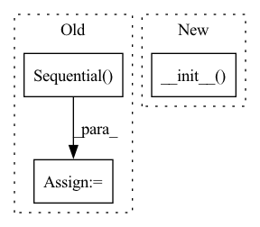

Pattern ID :15875
Before Change
depthwise_conv, chomp, prelu, norm, pointwise_conv
)
else:
self.net = nn.Sequential(
depthwise_conv, prelu, norm, pointwise_conv
)
def forward(self, x):
Args:After Change
net = [depthwise_conv, chomp, prelu, norm, pointwise_conv]
else:
net = [depthwise_conv, prelu, norm, pointwise_conv]
super().__init__( *net)
class Chomp1d(nn.Module):
To ensure the output length is the same as the input.In pattern: SUPERPATTERN
Frequency: 6
Non-data size: 3
Instances Fragment ID: 53650146
Project Name: speechbrain/speechbrain
Commit Name: f87280274c11336edba544e0fa0ce51eea109326
Time: 2020-08-04
Author: csubakan@gmail.com
File Name: speechbrain/lobes/models/conv_tasnet.py
M Class Name: DepthwiseSeparableConv
N Class Name: DepthwiseSeparableConv
M Method Name: __init__(9)
N Method Name: __init__(9)
M Parent Class: Sequential
N Parent Class: nn.Module
M File Name: speechbrain/lobes/models/conv_tasnet.py
N File Name: speechbrain/lobes/models/conv_tasnet.py
M Start Line: 322
M End Line: 351
N Start Line: 337
N End Line: 357
Before Change
])
else:
act_class = act_class_mapping[activation]
self.output_network = nn.Sequential(
nn.Linear(hidden_channels, hidden_channels // 2),
act_class(),
nn.Linear(hidden_channels // 2, 1)
)
atomic_mass = torch.from_numpy(ase.data.atomic_masses).float()
self.register_buffer("atomic_mass", atomic_mass)
After Change
class DipoleMoment(Scalar):
def __init__(self, is_equivariant, hidden_channels, activation="silu"):
super(DipoleMoment, self).__init__( is_equivariant, hidden_channels,
activation, allow_prior_model=False)
atomic_mass = torch.from_numpy(ase.data.atomic_masses).float()
self.register_buffer("atomic_mass", atomic_mass)
Fragment ID: 53650147
Project Name: torchmd/torchmd-net
Commit Name: 403df16c35df51669ed6a39ac3ec393967686148
Time: 2021-07-15
Author: p.thoelke@gmx.de
File Name: torchmdnet/models/output_modules.py
M Class Name: DipoleMoment
N Class Name: DipoleMoment
M Method Name: __init__(4)
N Method Name: __init__(4)
M Parent Class: Scalar
N Parent Class: OutputModel
M File Name: torchmdnet/models/output_modules.py
N File Name: torchmdnet/models/output_modules.py
M Start Line: 53
M End Line: 73
N Start Line: 71
N End Line: 72
Before Change
num_layers=num_layers, batch_first=True, bidirectional=bidirectional)
self.loss_func = loss_func
self.preprocessor = preprocessor
self.scaling_layer = nn.Sequential(
nn.Linear(hidden_size, input_size), nn.ReLU())
self.init_weights()
self.bidirectional = bidirectional
def init_weights(self):After Change
class LSTM(SpecBase):
def __init__(self, loss_func, preprocessor, input_size=257, hidden_size=257, num_layers=3, bidirectional=False):
super(LSTM, self).__init__( loss_func, preprocessor, input_size=257, hidden_size=257, num_layers=3, bidirectional=False)
def transform(self, src, tar=None):
_, src_linears, src_phases = self.preprocessor(src)
pred_linears, _ = self.lstm(src_linears) Fragment ID: 53650150
Project Name: changlee0903/seril
Commit Name: 0723961e773564b5257d082ef2876f29059709c8
Time: 2020-09-06
Author: r08922a27@csie.ntu.edu.tw
File Name: model.py
M Class Name: LSTM
N Class Name: LSTM
M Method Name: __init__(7)
N Method Name: __init__(7)
M Parent Class: SpecBase
N Parent Class: nn.Module
M File Name: model.py
N File Name: model.py
M Start Line: 7
M End Line: 15
N Start Line: 134
N End Line: 134
Before Change
super(Classifier, self).__init__()
self.backbone = backbone
self.num_classes = num_classes
self.bottleneck = nn.Sequential(
nn.AdaptiveAvgPool2d(output_size=(1, 1)),
nn.Flatten()
)
self._features_dim = self.backbone.out_features
self.head_source = head_source
if head_target is None:
After Change
def __init__(self, backbone: nn.Module, num_classes: int, head_source,
head_target: Optional[nn.Module] = None, finetune=True):
super(Classifier, self).__init__( backbone, num_classes, head_source, head_target, finetune=finetune)
def get_parameters(self, base_lr=1.0) -> List[Dict]:
A parameter list which decides optimization hyper-parameters,
Fragment ID: 53650151
Project Name: thuml/transfer-learning-library
Commit Name: bb01bcdbcefbf0fe95adb117fd1c4f502c045ea0
Time: 2021-06-22
Author: 13126830206@163.com
File Name: ftlib/finetune/co_tuning.py
M Class Name: Classifier
N Class Name: Classifier
M Method Name: __init__(6)
N Method Name: __init__(6)
M Parent Class: ClassifierBase
N Parent Class: nn.Module
M File Name: ftlib/finetune/co_tuning.py
N File Name: ftlib/finetune/co_tuning.py
M Start Line: 132
M End Line: 145
N Start Line: 134
N End Line: 134
Before Change
proj_layers.append(nn.ReLU(inplace=True))
embeds = nn.Linear(dims[-2], dims[-1], bias=num_class > 0)
proj_layers.append(embeds)
self.head = nn.Sequential(
*proj_layers
)
self.out = nn.Linear(dims[-1], num_class)
def forward(self, x):
features = self.encoder(x)After Change
class CutPasteNet(_CutPasteNetBase):
// forward outputs: (logits, embeds)
def __init__(self, encoder="resnet18", pretrained=True, dims=[512, 512, 512, 512, 512, 512, 512, 512, 128], num_class=3):
super().__init__( encoder, pretrained, dims, num_class)
return
def forward(self, x):
features = self.encoder(x) Fragment ID: 53650148
Project Name: lilityolyan/cutpaste
Commit Name: 7266df86ac2c99e58830182d164f7efba0e2fa83
Time: 2022-01-25
Author: lg93lggt@163.com
File Name: model.py
M Class Name: CutPasteNet
N Class Name: CutPasteNet
M Method Name: __init__(5)
N Method Name: __init__(5)
M Parent Class: _CutPasteNetBase
N Parent Class: nn.Module
M File Name: model.py
N File Name: model.py
M Start Line: 7
M End Line: 21
N Start Line: 49
N End Line: 50
Before Change
causal,
)
// Put together
self.net = nn.Sequential( conv1x1, prelu, norm, dsconv)
def forward(self, x):
Args:After Change
)
// Put together
net = [conv1x1, prelu, norm, dsconv]
super().__init__( *net)
def forward(self, x, init_params=False):
Arguments Fragment ID: 53650143
Project Name: speechbrain/speechbrain
Commit Name: f87280274c11336edba544e0fa0ce51eea109326
Time: 2020-08-04
Author: csubakan@gmail.com
File Name: speechbrain/lobes/models/conv_tasnet.py
M Class Name: TemporalBlock
N Class Name: TemporalBlock
M Method Name: __init__(9)
N Method Name: __init__(9)
M Parent Class: Sequential
N Parent Class: nn.Module
M File Name: speechbrain/lobes/models/conv_tasnet.py
N File Name: speechbrain/lobes/models/conv_tasnet.py
M Start Line: 277
M End Line: 294
N Start Line: 275
N End Line: 291